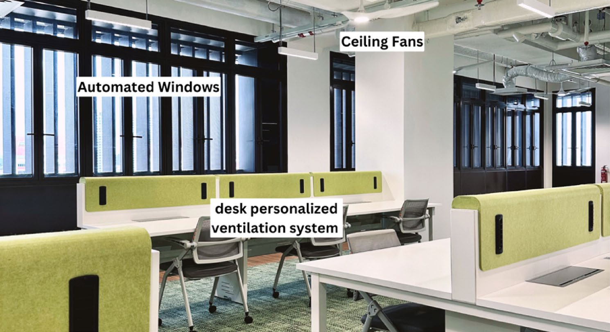
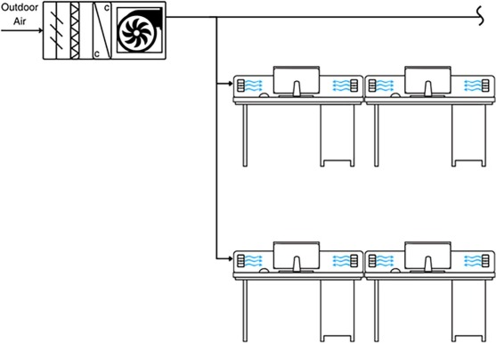
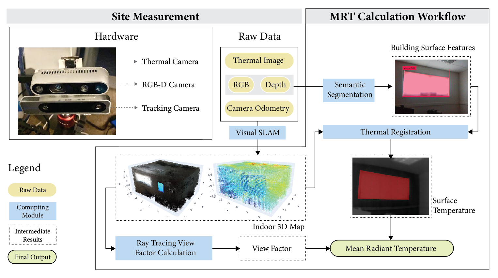
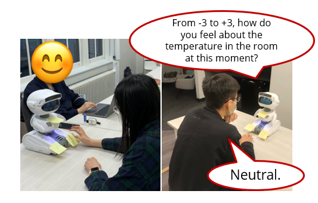

publications
In reverse chronological order.
My research interests include robotic and IoT applications for building management, building performance modeling, and building controls and diagnostics. For the most up-to-date list, please see my Google Scholar and ResearchGate pages. * denotes corresponding author.
2026
-
 Adversarial inverse reinforcement learning control for mixed-mode ventilation systems with physics-constrained neural network selectedEnergy and Buildings, 2026
Adversarial inverse reinforcement learning control for mixed-mode ventilation systems with physics-constrained neural network selectedEnergy and Buildings, 2026We proposed an adversarial inverse reinforcement learning framework for mixed-mode ventilation that learns from rule-based controls to reduce unnecessary window operations and improve comfort and energy efficiency.
-

The effects of mixed-mode ventilation on energy saving and employee job satisfaction, work engagement, and job performanceScientific Reports, 2026A 19-week field study and follow-up experiment in Singapore found that mixed-mode ventilation reduced cooling energy use without statistically lowering employees' job satisfaction, work engagement, or job performance.
-

Weather-adaptive rule-based mixed-mode ventilation in a tropical climate: simulation and real-world validationEnergy and Buildings, 2026We developed and field-validated a weather-adaptive, fan-assisted mixed-mode ventilation strategy that tunes window-opening thresholds, cooling setpoints, and fan speeds to expand free cooling and cut energy use in a tropical office.
2025
-
 Exploring Gaussian Process Regression for Indoor Environmental Quality: Spatiotemporal Thermal and Air Quality Modeling with Mobile Sensing selectedBuilding and Environment, 2025
Exploring Gaussian Process Regression for Indoor Environmental Quality: Spatiotemporal Thermal and Air Quality Modeling with Mobile Sensing selectedBuilding and Environment, 2025Reconstruction of spatiotemporal indoor environmental quality maps using Gaussian process regression with limited sensor data.
2024
-
 Energy flexibility quantification of a tropical net-zero office building using physically consistent neural network-based model predictive control selectedAdvances in Applied Energy, 2024
Energy flexibility quantification of a tropical net-zero office building using physically consistent neural network-based model predictive control selectedAdvances in Applied Energy, 2024A case study is presented adopting the framework for data-driven building energy flexibility quantification. A novel physically consistent neural network (PCNN) based MPC framework is proposed and implemented. The PCNN model addresses the internal loads and disturbances and captures free-floating building thermodynamics.
-

An Expeditious Spatial Mean Radiant Temperature Mapping Framework using Visual SLAM and Semantic Segmentation2024 IEEE/CVF Conference on Computer Vision and Pattern Recognition Workshops (CV4AEC), 2024Efficiently generating the spatial field of mean radiant temperature in an indoor environment using visual simultaneous localization and mapping (vSLAM) and semantic segmentation.
2022
-

Improving post-occupancy evaluation engagement using social robotsThe 9th ACM International Conference on Systems for Energy-Efficient Built Environments (BuildSys), 2022We introduced social robots as a post-occupancy-evaluation tool to improve occupants' engagement.
theses
-
Ph.D. dissertation, Carnegie Mellon University, 2024
-
M.Sc. thesis, University of California, Merced, 2014